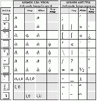

ESPIRITUS
Los espíritus (aspiración, en latín) son dos signos muy peculiares del griego. Todas las palabras que empiezan por vocal y por rho ( ρ ) los llevan. El espíritu se coloca sobre la letra si ésta es minúscula, y a su derecha, si es mayúscula. Los espíritus pueden ser:
Espíritu suave (᾿): no se pronuncia ni se transcribe, sólo puede ir sobre una vocal (ἀνήρ se pronuncia “anér”).
Espíritu áspero (῾): se pronuncia como una leve aspiración (h inglesa o alemana) puede ir sobre vocal o r inicial, aunque si es sobre esta consonante no se pronuncia. en español se transcribe como una h (ἵππος se pronuncia híppos).
Observación:
Toda ypsilón (υ) o rho (ρ) inicial siempre lleva espíritu áspero. cuando se encuentran dos rho en medio de palabra, la primera puede escribirse con espíritu suave y la segunda con el áspero. ejemplo: Πύῤῥος =Pirro.
